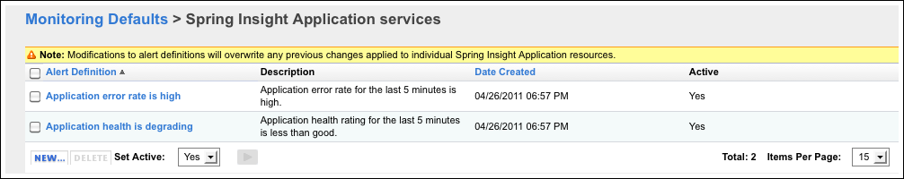

Available only in vFabric Hyperic
- Spring Insight Plugin Overview
- About Spring Insight
- Functionality of Hyperic Spring Insight Plugin
- Supported Versions and Requirements
- Spring Insight Resources and the Hyperic Inventory Model
- Installation Environment
- Configuration Instructions
- Step 1: Install Hyperic Agents
- Step 2: Import Insight Dashboard to Hyperic Inventory
- Step 3: Tailor Plugin Monitoring Defaults (Optional)
- Step 3: Tailor Alert Definitions (Optional)
- Resource Types and Management Functions
Spring Insight Plugin Overview
About Spring Insight
Spring Insight Operations captures Web application events known as traces. A trace represents a thread of execution. Traces are usually started by an HTTP request but can also be started by a background job. A trace contains operations, which represent significant points in the execution of the trace, for example, a JDBC query or transaction commit. Insight Operations uses trace data to calculate summary information that helps identify the root cause of application performance issues.
Insight Operations has a two-tiered architecture that consists of Spring Insight Dashboard and Spring Insight Agent. tc Server instances that run production Web applications run the Spring Insight Agent application. Insight Agent collects trace data and sends it to a single, dedicated tc Runtime instance running Spring Insight Dashboard. Insight Dashboard provides a user interface for monitoring applications across all servers and to get detailed statistics from individual servers.
Functionality of Hyperic Spring Insight Plugin
Hyperic's Spring Insight plugin:
- Collects application metrics from a Spring Insight Dashboard as described below in Metric Collection.
- Provides two built-in resource type alerts that apply to all Spring Insight Application resources. The alerts are described in Pre-Configured Alert Definitions.
- Provides a user interface for viewing the health of Spring Insight Applications and for analyzing application health and performance issues. For more information, see Spring Insight Applications View below.
Supported Versions and Requirements
The Spring Insight plugin requires:
- Hyperic 4.6 or later
- Spring Insight Operations 1.5.1
Spring Insight Resources and the Hyperic Inventory Model
The indented list below illustrates the hierarchy of Hyperic resource types that represent Insight and Insight-monitored applications.
Spring Insight
Spring Insight Application
The table below lists the resource types in Hyperic that map to managed Spring Insight entities. The right column indicates the inventory level for each type in the Hyperic inventory model.
| Hyperic Resource Type | Description | Hyperic Inventory Type |
| Spring Insight | Represents the Insight Dashboard application. A tcServer runtime created with the Insight-Dashboard template. | server |
| Spring Insight Application | A Spring application that is monitored by Insight. An application running in a tc Server runtime created with the Insight-Agent template. | service |
Note: For more information about the managed resource hierarchy, see Resources, Resource Types and Inventory Types.
| The tc Server Runtime that a Spring Insight Agent or Spring Insight Dashboard runs in is represented in Hyperic as a server of type "tc Runtime", and monitored as any tc Runtime is. |
Installation Environment
You must install and configure a Hyperic Agent on:
- the Insight Dashboard host, and
- each host that runs an Insight Agent reporting to the Insight Dashboard
If your application server is monitored by a Hyperic Agent, performance metrics for the server instance that a Spring Insight application runs are available in the Spring Insight plugin user interface, described below in Spring Insight Applications View.
If your application has a database tier, if the database server is managed by a Hyperic Agent, the Spring Application View will include database metrics, along with metrics for the application, application server, and platform tiers. (For information about the user interface, see Spring Insight Applications Page.
If you want to see database metrics in the Spring Application View, you must install and configure a Hyperic Agent on the database server host.
Configuration Instructions
This section has instructions for setting up the Spring Insight plugin.
Step 1: Install Hyperic Agents
If you have not already done so, install and start a Hyperic Agent on the host where the Insight Dashboard runs, and on each host of each Insight Agent reporting to the Insight Dashboard. See Install an Agent-Only Package in Getting Started with vFabric Hyperic for instructions.
Step 2: Import Insight Dashboard to Hyperic Inventory
After you start the Hyperic Agent on the Insight Dashboard, and it discovers the Insight Dashboard, the dasboard server resource appears in the Auto-Discovery Portet on the Hyperic Dashboard. Import the resource to inventory to start monitoring the Insight Applications reporting to the dasboard.
For more information, see Discover and Import Resources to Inventory.
Step 3: Tailor Plugin Monitoring Defaults (Optional)
See Metric Collection below for the default metric collection settings for Spring Insight and Spring Insight Application resources.
You can enable and disable metrics, select indicator metrics, and change the collection interval for a resource type on its Monitoring Defaults page.
- Click the Administration tab.
- Click Monitoring Defaults.
- Scroll down to the desired resource type — Spring Insight or Spring Insight Application — and click Edit Metric Template.
For more information, see Tailor Metric Collection for a Resource Type.
Step 3: Tailor Alert Definitions (Optional)
The Spring Insight plugin provides two built-in resource type alerts for Spring Insight Application resources, described below in Pre-Configured Alert Definitions.
To view and edit one of the alert definitions:
- Click the Administration tab.
- Click Monitoring Defaults.
- Scroll down to the Spring Insight Application resource type and click Edit Alerts.
- The Monitoring Defaults page displays key information about the alert.

- The Monitoring Defaults page displays key information about the alert.
- On the Monitoring Defaults > Spring Insight Application services page, you can:
- Disable an alert definition by placing a checkmark next to it, and toggling the Set Active control from "Yes" to "No".
- Create a new alert definition for the Spring Insight Application resource type, by clicking New, and following the instructions on Define an Alert for a Resource Type.
- View or edit an alert definition, by clicking its name in the Alert Definition column. For more information, see Edit an Alert Definition.
Resource Types and Management Functions
This section describes the management functions the Spring Insight plugin performs.
Auto-Discovery
The Spring Insight plugin performs a Sigar process query to discover a local Insight Dashboard process, and creates a server of type "Spring Insight".
Once the "Spring Insight" resource is imported to inventory, the plugin creates an service of type "Spring Insight Application" for each application reporting to the dashboard.
Spring Insight
| Property | Description |
|---|---|
| resource name | The plugin forms the Hyperic name for a Spring Insight Dashboard by concatenating: parent platforms FQDN, a space, and the string "Spring Insight Dashboard". |
| Description | |
| Instance Port |
Spring Insight Application
| Property | Description |
|---|---|
| resource name | The plugin forms the Hyperic name for a Spring Insight Dashboard Application by concatenating: parents resource name, a space, "application name", and the string "Application". |
| Description | The plugin forms the description |
| Owner | The Hyperic user account under which the resource was created. |
Metric Collection
The following sections define the metrics for each Spring Insight resource type.
Spring Insight Dashboard Metrics
| Name | Alias | Units | Category | Default On | Default Interval |
|---|---|---|---|---|---|
| Availability | Availability | percentage | AVAILABILITY | true | 5 min |
Spring Insight Application Metrics
| Name | Alias | Units | Category | Default On | Default Interval |
|---|---|---|---|---|---|
| Availability | Availability | percentage | AVAILABILITY | true | 5 min |
| Health | Health[rangeLabel=Last 5 minutes].score |
percentage | PERFORMANCE | true | 5 min |
| Total Invocation Count | MetricDataSummaries[metric=invocationCount,label=Last 5 minutes].value |
none | UTILIZATION | true | 5 min |
| Frustrated Invocation Count | MetricDataSummaries[metric=tag.frustrated,label=Last 5 minutes].value |
none | UTILIZATION | true | 5 min |
| Satisfied Invocation Count | MetricDataSummaries[metric=tag.satisfied,label=Last 5 minutes].value |
none | UTILIZATION | true | 5 min |
| Tolerated Invocation Count | MetricDataSummaries[metric=tag.tolerated,label=Last 5 minutes].value |
none | UTILIZATION | true | 5 min |
| Error Rate | MetricDataSummaries[metric=errorCount/invocationCount,label=Last 5 minutes].value |
percentage | PERFORMANCE | true | 5 min |
Application Server Metrics
You can chart any metric you collect for tcServer Runtime on the Spring Insight Applications view. For definitions of the available metrics, see the documentation at tc Server.
Database Metrics
If your application accesses a database server that is managed by a Hyperic Agent, any of the metrics you collect for the database can be presented in the Spring Insight Applications view. For definitions of the metrics collected for your database, see the documentation for the associated plugin on the Hyperic Community at http://support.hyperic.com/display/hyperforge/Databases.
Platform Metrics
You can chart any metric you collect for the platform where the application server runs on the Spring Insight Applications view. For definitions of the available metrics, see http://support.hyperic.com/display/hyperforge/Operating+System+Metrics].
Pre-Configured Alert Definitions
The Spring Insight plugin provides two pre-configured alert definitions for Spring Insight Application resources. The built-in alert definitions specify resource type alerts — alerts that are assigned at the resource type level, rather than to individual resource instances.
Application Health Alert
The properties for this alert are:
- Name — Application health is degrading
- Description — Application error rate for the last 5 minutes is high.
- If Condition — Health < 85.0%
- Enable Action(s) — Each time conditions are met. Generate one alert and then disable alert definition until fixed.
Application Error Alert
- Name — Application error rate is high
- Description — Application error rate for the last 5 minutes is high.
- If Condition — Error Rate > 10.0%
- Enable Action(s) — Each time conditions are met. Generate one alert and then disable alert definition until fixed
Spring Insight Applications View
The Spring Insight Application page is available on the Resources tab if you have Insight Operations components under Hyperic management. This view presents health metrics for an Insight application along with metrics for related resources (for example, the application server where the application runs, the machine that hosts the application server, or a database that the application reads and updates) over the same timeframe.
When the "Insight Application View" indicates an application performance issue, you can investigate by jumping from the Hyperic user interface into the Insight Dashboard application, into the same application context as the problem occurred. For more information, see Spring Insight Applications Page.
{kind=link}
{kind=link}